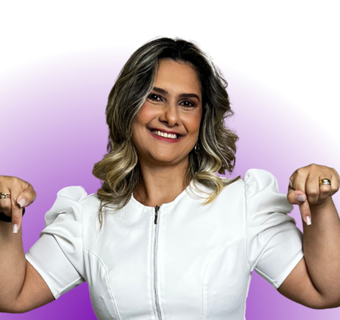
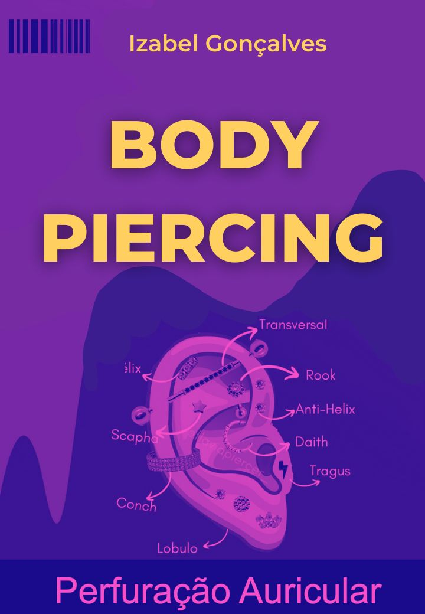
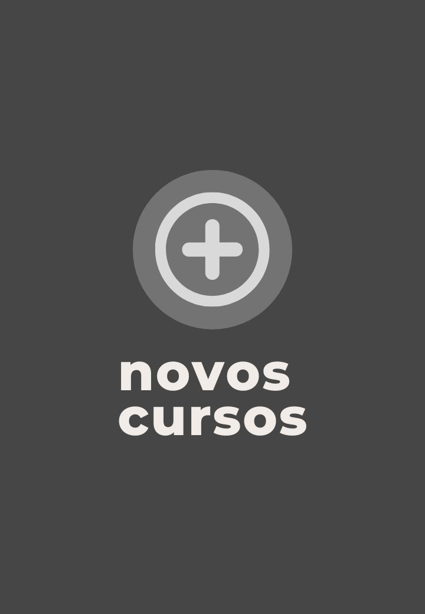

O guia prático da técnica de enfermagem: 10 lições para trabalhar com segurança e ganhar mais.
Toda semana eu escuto a mesma pergunta: "Iza, por onde eu começo?". Tem quem acabou de pegar o COREN e trava no primeiro plantão. Tem quem parou de atuar há anos e sente que perdeu o jeito. E tem quem já trabalha, mas quer ganhar mais com o que sabe.
Este guia é a minha resposta. Separei 10 lições curtas, direto ao ponto, com o que eu gostaria que alguém tivesse me ensinado no começo: do cálculo de medicação à anotação de enfermagem, da bomba de infusão à forma de fazer o seu dinheiro render.
Cada lição é a porta de entrada de um mini curso. E no dia 09 de novembro, às 20h, eu abro o acesso vitalício a todos eles, só para quem estiver no grupo do WhatsApp.
Lê com calma, salva no celular e volta nele antes do plantão.
Quase todo cálculo do plantão se resolve com duas ferramentas: a regra de três e as fórmulas de gotejamento.
Prescrição: dipirona 500 mg. Ampola disponível: 1 g em 2 mL (1 g = 1.000 mg).
1.000 mg ——— 2 mL
500 mg ——— x
x = (500 × 2) ÷ 1.000 = 1 mL
Gotas/min = volume (mL) ÷ (tempo × 3)
Microgotas/min = volume (mL) ÷ tempo
Exemplo: 500 mL de SF 0,9% em 8 horas → 500 ÷ (8 × 3) = 20,8 ≈ 21 gotas/min. Em microgotas: 500 ÷ 8 = 62,5 ≈ 63 microgotas/min.
Para não esquecer: 1 mL = 20 gotas = 60 microgotas. 1 gota = 3 microgotas.

A bomba é precisa, mas só faz o que alguém programou. A segurança está na conferência.
Vazão (mL/h) = volume (mL) ÷ tempo (h). Ex.: 250 mL em 5 h = 50 mL/h.
Acertar a veia de primeira começa antes da agulha: na escolha do local e no preparo.
No braço com fístula arteriovenosa, do lado de mastectomia ou esvaziamento axilar e em áreas com edema, lesão ou flebite. Se não conseguir, não insista: siga o limite de tentativas do protocolo e peça apoio.
Os dois grandes riscos da dieta por sonda são a broncoaspiração e a sonda entupida. Os dois se evitam com rotina.
Tosse, engasgo ou falta de ar durante a infusão, vômito, distensão abdominal ou diarreia.
Paciente traqueostomizado depende de uma via aérea limpa e bem fixada. Os cuidados são simples, mas não podem falhar.
Desconforto respiratório que não melhora com a aspiração, sangramento, inchaço com "estalinhos" na pele do pescoço ou saída da cânula.
Quem ajusta o ventilador é a equipe responsável. O seu papel é observar, prevenir complicações e comunicar rápido.
Olhe primeiro para o paciente (cor, esforço para respirar, saturação), depois para o aparelho. Nunca silencie sem descobrir a causa e chame a equipe.
Sinais vitais bem aferidos e rotinas de segurança percebem a piora do paciente antes de qualquer aparelho.
| Frequência cardíaca | 60 a 100 bpm |
| Frequência respiratória | 12 a 20 irpm |
| Pressão arterial | Ideal abaixo de 120 × 80 mmHg; a partir de 140 × 90 mmHg, comunique |
| Temperatura axilar | Em geral de 36 a 37,2 °C (febre a partir de 37,8 °C, conforme o protocolo) |
| Saturação de O₂ | Em geral 95% ou mais em quem não tem doença pulmonar crônica |
O que não foi registrado, para a lei, não foi feito. A anotação é o seu respaldo.
Anotação ou evolução? A anotação é feita por toda a equipe de enfermagem, incluindo técnicos e auxiliares. A evolução de enfermagem é privativa do enfermeiro.
08h00 · Paciente no leito, consciente, orientado e comunicativo. Refere dor em região abdominal, nota 5 de 10. Sinais vitais: PA 130 × 80 mmHg, FC 88 bpm, FR 18 irpm, Tax 36,5 °C, SpO₂ 97% em ar ambiente. Acesso venoso periférico em membro superior esquerdo, sem sinais flogísticos. Comunicado o enfermeiro sobre a dor. Maria Silva, Téc. Enf., COREN 000000.
Medo de plantão, insegurança e cansaço não são fraqueza. São sinais de que você também precisa de cuidado.
Muita aluna chega até mim achando que "o problema é ela". Na maioria das vezes, o problema foi a formação que não preparou para a realidade do plantão. Preparo diminui o medo.
Ligue 188, o CVV (Centro de Valorização da Vida): gratuito, 24 horas, todos os dias. Você também pode procurar a UBS ou o CAPS da sua cidade.
O mesmo COREN pode abrir mais de uma fonte de renda. O segredo é saber onde procurar e organizar o que entra.
Cada lição deste guia é um pedaço de um mini curso completo, com aula em vídeo, passo a passo e certificado.
No dia 09 de novembro, às 20h, eu abro a Black Friday Vitalício: acesso para sempre a todos os mini cursos e a todos os que eu lançar depois.
A oferta só aparece dentro do grupo do WhatsApp.
Entrar no grupo do WhatsAppA Formação Técnico de Enfermagem de Valor virou mini cursos: você estuda exatamente o que precisa, na ordem que quiser.
Programar, conferir e responder aos alarmes com segurança.
O que observar no paciente ventilado e como agir nos alarmes.
Aspiração, curativo, fixação e cuidados com o cuff.
Dieta e medicação pela sonda sem obstrução e sem broncoaspiração.
Sinais vitais, higiene, conforto, decúbito e prevenção de quedas e lesões.
Escolha da veia, técnica e manutenção do acesso periférico.
Regra de três, diluição e gotejamento sem medo.
Registrar certo, com respaldo legal.
O Método 3D para assumir plantões de baixa, média e alta complexidade.
Ansiedade, medo do plantão e limites: cuidar de quem cuida.
Organizar, guardar e fazer crescer o que a enfermagem traz.
O clube de quem vive de plantão: conteúdo contínuo e troca entre colegas.
Perfuração do lóbulo com acolhimento, do bebê ao adulto.

Hélix, tragus, conch, daith, rook e outros pontos da orelha.
Limpeza de ouvido e terapia com cone chinês.
Curativos, drenos, sinais de alerta e recuperação.

Cada curso novo entra no seu acesso, sem pagar nada a mais.
Mensagens reais que chegaram para a Iza.
Depoimentos reais, enviados por alunas. Os resultados variam de pessoa para pessoa e dependem da dedicação de cada uma.
Eu sou a Iza, enfermeira, criadora do Método 3D e da Escola Enfermagem de Valor.
Meu trabalho é preparar técnicas e técnicos de enfermagem para a realidade do plantão, com segurança e com valor, e mostrar que a enfermagem pode abrir mais de uma porta de renda.
Nesta Black Friday eu abro, pela primeira vez, o acesso vitalício a tudo o que eu ensino.
Pague uma vez e estude para sempre: os mini cursos de hoje e todos os que eu lançar depois.
A oferta é liberada só dentro do grupo do WhatsApp, com preço especial para quem estiver lá. Fora do grupo, ela não aparece.
Quero entrar no grupoEscola Enfermagem de Valor · Izabel Gonçalves
© 2026 · Todos os direitos reservados. Material de estudo: não substitui o protocolo da sua instituição nem a orientação do enfermeiro responsável.